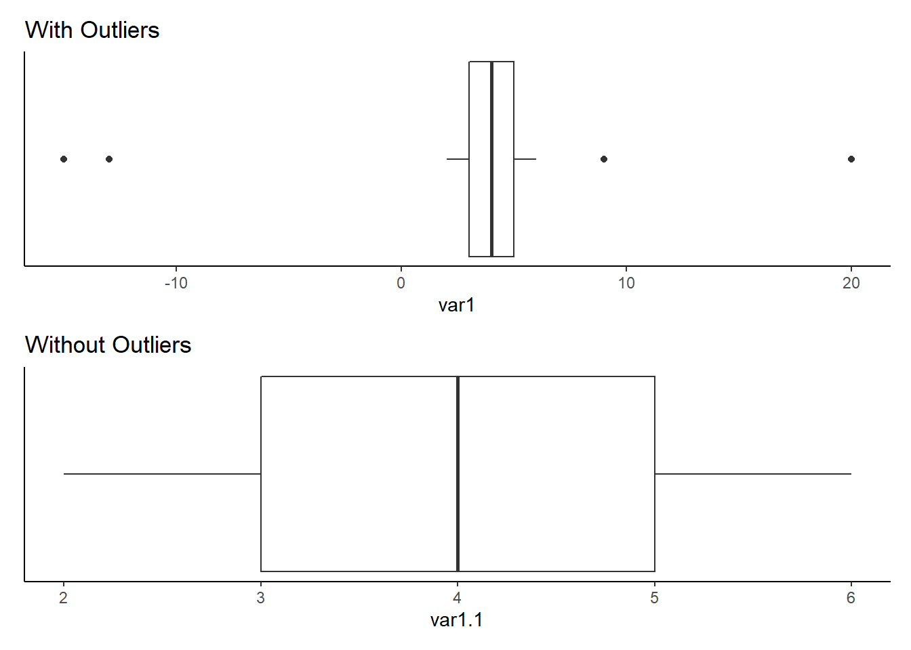

# remove outliers steps
# 1. get Q1 and Q3
Q = quantile(outlier_df$var1.1, probs = c(.25,.75), na.rm = FALSE)
# 2. get IQR
iqr = IQR(outlier_df$var1.1)
# 3. get upper and lower ranges
up <- Q[2]+1.5*iqr # Upper Range
low <- Q[1]-1.5*iqr # Lower Range
# 4. remove outliers (outlier_df is the name of my data frame, var1.1 is the name of the column that I am removing outliers from)
no_outliers_p <- outlier_df %>%
filter(var1.1 > low & var1.1 < up) %>%
ggplot(aes(x = var1.1)) +
geom_boxplot() +
theme_classic() +
labs(title = "Without Outliers") +
theme(axis.text.y = element_blank(), axis.ticks.y = element_blank())Identifying and Removing Outliers
Outliers can distort a dataset, but how do you find and remove them?

What are outliers?
This image is from DataCamp’s learning platform, and it shows a visual of a boxplot, and the outliers on either side of the distribution. To find the outliers on the lower range you do the following equation Q1 - 1.5 x IQR. To find outliers on the upper range you use this equation Q3 + 1.5 * IQR.

You can use those equations to then filter out the outliers and then continue with your analysis. I have created some data with outliers to show how you would do this in R.
Steps to identify outliers:
- Get the 25th and 75th percentile of a dataset
Q = quantile(DATAFRAME$columnName, probs = c(.25,.75), na.rm = FALSE)- Find the Interquartile Range (IQR)
iqr = IQR(DATAFRAMEf$columnName)- Find upper and lower cut off ranges
up <- Q[2]+1.5*iqr # Upper Range
low <- Q[1]-1.5*iqr # Lower RangeSteps to remove outliers:
Identify outliers
As shown above
Use dplyr to filter
install.packages("dplyr") library(dplyr)Filter
clean_dataframe <- DATAFRAME %>% filter(columnName > low & var1.1 < up)
Here is an example of the full code working with a data frame
With Outliers vs Without Outliers
# patchwork to show plots
outlier_p / no_outliers_p